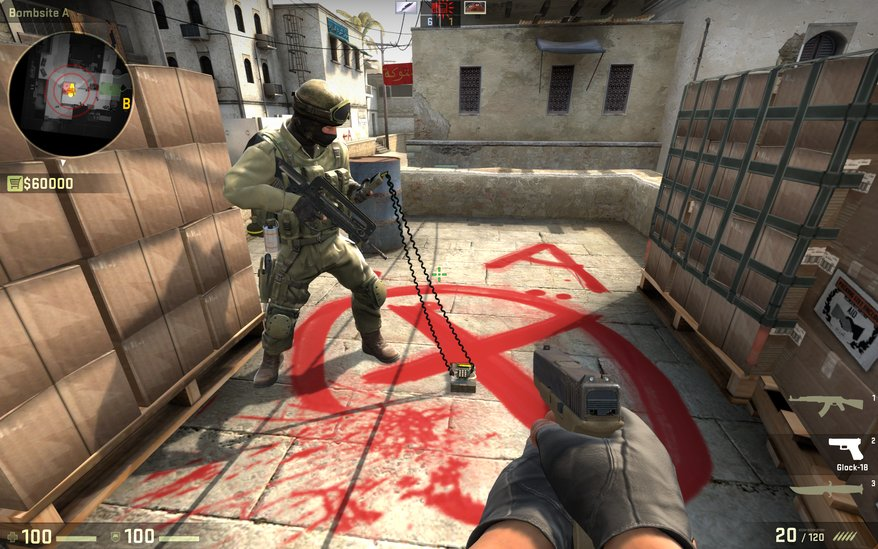

Zu den Counter Terroristen kann man sagen, das es sozusagen die Polizisten sind. Diese müssen es schaffen die Bombe (falls sie plaziert wurde) zu entschärfen. Um dies am besten zu bewältigen muss man davor alle Terroristen am besten Töten, damit man die Bombe in ruhe entschärfen kann. Einige Spieler hatten das Glück und haben einen sogenannten Ninja Defuse erfolgreich durchgeführt. Bei dem Ninja Defuse wirft man eine Rauchbombe auf den Ort wo die Bombe platziert wurde und versucht sie inmitten des Rauches zu entschärfen ohne von den Terroristen getroffen zu werden.
